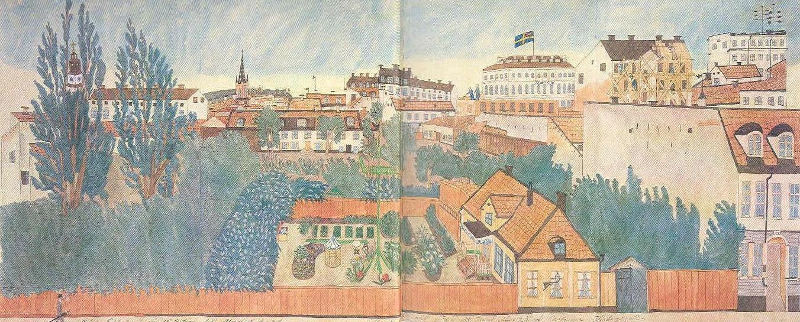

Södermalm i tid och rum
UTSIKT ÖVER SÖDER MOT NORRMalmgårdsidyllen och bostaden i förgrunden är bildens medelpunkt och alla detaljerna i huset och den poetiska täppan är väl studerade. Rosor, pioner, violer och tulpaner har sammanfogats med verandan till en lustgård av avskildhet. En flöjels drakhuvud har på gammalt vis uppsatts på grön stång.
Den stora infattande stadsvyn är utförd med ledigare hand. I fonden ser man ända till kvarnarna på Norrmalm, till vänster Maria kyrka vådligt stiliserad och till höger Mosebacke flaggande teater, i vars närhet den nya stenstadens byggen skjuter i höjden.
Trädgårdshuset, nummer 32, tillhörde den tiden minuthandlare Glassel. Mosebackeområdet förnyas ännu som bäst efter den stora branden 1857. Dubbla sömmar håller ihop två pappersblad.

Trädgårdsfasaden har en liten frontespis över en veranda framför mittdörren, och från verandan leder några trappsteg ned till markplanet där sandgångar breder sig kring rabatter med tulpaner, pioner och rosor, syrenhäckar och kryddgårdskvarter, lusthus och flaggstång. Allt detta - mot en folie av blåtonad grönska - har mamsell Sjöberg målat med så sirlig detaljering och så kärleksfull inlevelse som någon medlem av den naivistiska Smedsuddsskolan skulle ha velat göra det framemot 1920.
Bakom denna försvunna idyll reser sig en högre, tätare och delvis modernare bebyggelse. Unionsflaggan vajar över Södra teatern, som hade återuppförts 1859 efter en rasande brand i Mosebacketrakten natten mellan den 26 och 27 augusti 1857 och som hade blivit ett centrum i det stockholmska nöjeslivet under fröjdpappan Ludvig Zetterholms regi.
I Gustaf Thomees "Stockholmska promenader" (1863) möter man en levande pust från detta lättsinnets högkvarter på Söder: "Mosebacke hävdar sålunda återigen sitt gamla rykte; musiken därifrån ljuder ännu över Saltsjöns breda vatten, dess byggnader stråla ännu uti bländande ljus- sken på vinter- och höstkvällarna, dansbanan besökes lika flitigt som förr, schweizeriets veranda vimlar av glaceätande damer och punschdrickande herrar, den praktfulla tavla, som Mosebacke erbjuder, beundras av ännu flera än förr, och högt uppe på det nya, prydliga teaterhusets tak svajar den svenska flaggan..."
Kontrasten mellan malmgårdsidyllen vid Högbergsgatan och den optiska telegrafen vid Mosebacketorg bidrar till den festliga stämning av Stockholm i full fart som präglar detta fint komponerade och ljust färgklingande blad. Man känner hur Carl XV:s glada huvudstad sträcker ut sina tentakler ända hit upp på Söder.
Murare, målare och plåtslagare arbetar på moderna hyreshus vid Mosebacketorg, men ännu öppnar sig glimtar av den fria sikten från Katarina mot Riddarholmskyrkans nya gjutjärnsspira och de många väderkvarnarna på Brunkebergsåsen. Mamsell Sjöberg har fört in en liten fläkt av den unga friskhet, som litteratören August Strindberg vid slutet av det följande årtiondet skulle skänka stockholmsskildringen just i en utsikt från Mosebacke över staden därnedanför.